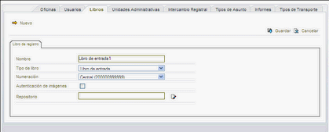

Para crear un nuevo libro de registro seleccione la opción Nueva de la pestaña Libros. Una vez rellenada la infomación
pulse el botón  Guardar para crear el libro y volver al listado de libros o el botón Guardar para crear el libro y volver al listado de libros o el botón
 Cancelar para ir al listado sin crearlo. Cancelar para ir al listado sin crearlo.
Rellene los siguientes datos:

-
Nombre: Nombre con el que identificar el libro de registro.
-
Tipo de libro: Puede ser de entrada o salida.
-
Tipo de numeración: Puede ser central o por oficina.
- Central: Todos los libros del mismo tipo con esta numeración comparten contador. Los cuatro primeros dígitos para el año, el resto para el contador.
- Por Oficina: La numeración dependerá de la oficina del registrador además del tipo de libro. Los cuatro primeros dígitos para el año,
los siguientes para el código de la oficina y el resto para el contador
-
Autenticación de imágenes: Si marca esta casilla, cuando se digitalicen documentos se añadirá en cada página un
sello que garantice su autenticidad
|